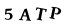

Code
# Uncomment these and run once if you are using colab
# !pip install -qq torchtext==0.8.1
# !pip install -Uqq fastbookAugustas Macijauskas
March 31, 2021
Special thanks to my dear friends Julius and Laurynas who joined me to work on this project.
We worked on and off for more than a month on this project, and I must say that it was not an easy, but definitely an extremely rewarding experience considering how much I’ve learnt. It was also a good chance to hone my problem solving skills and endurance, as we switched approaches (and even libraries!) at least three times, spent substantial amounts of time reading through various resources and codebases and trying to adapt the codes to our purpose through trial and error.
The key takeaways are:
The idea is to use deep learning to recognise images from this captcha image dataset. The images look like the following:

Our final approach was the following:
0, 1, O or I) for each position, i.e. model has four outputs, each predicting one of the 32 symbols for each position in the captchaCrossEntropyLoss with reduction="sum" which will calculate the losses for each of the four outputs and sum them up. This way, we can easily build a model to predict multiple things at the same timeEverything looked rather easy at first, however, it took us quite some time to come up with an elegant and easy to follow implementation. Continue reading for details!
Toggle cells below if you want to see what imports are being made.
Use fastai get_image_files utility function to get a list of paths to captcha files:
Path('captcha_images/PRBV.png')We separately checked that all the images are 24x72x3.
Create python dictionaries that will be used to map symbols to integers and vice versa:
This custom thing that we need is a fastai Transform that knows how to deal with a multi-output label. Reading through fastai source code we’ve managed to find that a convenient way to do this is to create a class that inherits from DisplayedTransform. The attributes l2i and i2l are used for label to int mapping. The encodes method is how to tell the library how something should be encoded, here we just take a string type label and turn it into a TensorCategory which is nothing more but a length four tensor with the name given for it to have a more human-readable semantic meaning. Similarly, the decodes method takes an encoded label and reverses it back to a string label which is wrapped in the Category class that is intended for categories that will be shown somewhere, e.g. in plots.
class MultiOutputCategorize(DisplayedTransform):
def __init__(self, l2i=l2i, i2l=i2l):
self.l2i = l2i
self.i2l = i2l
def encodes(self, string_label):
return TensorCategory([self.l2i[l] for l in string_label])
def decodes(self, encoded_label):
return Category("".join([self.i2l[v.item()] for v in encoded_label]))We can now use our new transform to create a DataBlock, the cornerstone of fastai’s mid-level API that is very flexible and can be customized for various purposes (a good example is this where it is used to implement a siamese network).
Important thing to notice is how we wrap our MultiOutputCategorize in a TransformBlock.
We also use augmentations to have more variety in our data while training the model. CropPad is used to pad image to a square (remember that all images were 24x72). All the other transform are pretty self explanatory, but make sure you read about them in the fastai docs if you feel like you need to.
captcha_data_block = DataBlock(
blocks=(ImageBlock, TransformBlock(type_tfms=MultiOutputCategorize())),
splitter=RandomSplitter(valid_pct=0.2, seed=42),
get_y=lambda x: x.stem,
item_tfms=[CropPad(size=72, pad_mode=PadMode.Border), Resize(64)],
batch_tfms=[*aug_transforms(do_flip=False, max_rotate=5.0)],
)Now create a dataloader, we use batch size 128 since experiments showed that it was the optimal one:
Another important thing to note is how fastai handles types behind the scenes - even though the images and labels were transformed and their actual types changed, the library manages to bubble up the correct initial types if needed. One of the authors of the library Jeremy Howard mentions in his code walk-thrus on YouTube that such an approach was borrowed from other programming languages that he used.
Let’s just one batch to make sure everything is alright:
Also check that our custom transform is working as it should be:
It is now time to build our multi-output model. Let’s begin by creating the final layer that will just take the outputs and will reshape them to 32x4 (ignoring batch dimension)
Next, we use fastai’s create_body method to get a resnet18 model backbone pretrained on ImageNet data. We then use the create_head method to add a head mainly consisting of fully-connected layers to map the outputs from the convolutional backbone to a 32*4=128 length vector. The weird parameter body[-1][-1].bn2.num_features is actually equal to 512 and is just the number of outputs of the convolutional backbone. We found that the model does not overfit so we turn off dropout by setting ps=0.0:
Combine the body, the head and the ReshapeLayer into a final model:
This last line that casts to model to the GPU might be redundant, but we haven’t checked that, so for now it is better to be safe than sorry.
Finally create a function that will tell how the model’s parameters have to be split when we’ll use transfer learning (e.g. which parts should be frozen or not):
We have come up to training the model.
First we need some custom functions that will track our metrics. The first one calculates overall accuracy (fraction of images were the model gets all four outputs right) and the second one calculates the fraction of individual outputs that the model got right. For example, for captcha “ABCD”, if the model guesses “ABCA”, then the overall accuracy will be 0, but individual accuracy will be 75% (3 out of 4 letters guessed correctly):
Next, we create a custom MultiOutputCrossEntropyLoss which is an adaption of fastai’s CrossEntropyLossFlat for our multi-output needs.
Figuring out the details of this one took a substantial amount of time, but in the end we figured out what each of the parameters do: - setting flatten=False turns off the default output flattening which is what we want - reduction="sum" makes the loss functions sum up the losses of individual outputs instead of averaging them - axis=1 tells the loss function that softmax and argmax should operate on dim=1, in our case this means that we go from shape [bs, num_classes=32, n_output=4] to shape [bs, n_output=4] after those activations are applied which is exactly what we want
Finally, we override the __call__ method because we noticed that the output gets weirdly transposed internally, so adding an additional transpose here reverses it and makes things work the way they should be:
class MultiOutputCrossEntropyLoss(CrossEntropyLossFlat):
def __init__(self, *args, **kwargs):
super().__init__(flatten=False, reduction="sum", axis=1, *args, **kwargs)
def __call__(self, inp, targ, **kwargs):
# fastai does an extra transpose inside, but we do need it, so this reverses it
inp = inp.transpose(1, 2)
return super().__call__(inp, targ, **kwargs)Now assemble all the bits from above to create a fastai learner:
We want to start by only training the head for a little bit, so let’s freeze the convolutional backbone:
Look for a suitable learning rate:
Train the head for 2 epochs with the found learning rate:
| epoch | train_loss | valid_loss | multi_output_accuracy | multi_output_individual_accuracy | time |
|---|---|---|---|---|---|
| 0 | 1531.273804 | 1531.483521 | 0.000000 | 0.170517 | 00:17 |
| 1 | 1195.153687 | 1006.178101 | 0.017077 | 0.400804 | 00:16 |
Unfreeze the convolutional backbone:
Look for a good learning rate and then train the whole model for 3 epochs:
| epoch | train_loss | valid_loss | multi_output_accuracy | multi_output_individual_accuracy | time |
|---|---|---|---|---|---|
| 0 | 611.221069 | 1285.856934 | 0.011552 | 0.353717 | 00:17 |
| 1 | 227.990952 | 82.341156 | 0.817177 | 0.950778 | 00:17 |
| 2 | 79.013634 | 9.029308 | 0.993973 | 0.998493 | 00:17 |
Look for a learning rate again (we will find it is a much smaller one) and train the model for one more epoch to get those extra bits of accuracy:
| epoch | train_loss | valid_loss | multi_output_accuracy | multi_output_individual_accuracy | time |
|---|---|---|---|---|---|
| 0 | 15.953323 | 7.600945 | 0.997991 | 0.999498 | 00:17 |
In just 6 epochs, transfer learning allowed us to reach we managed toan accuracy of 99.7% percent. Amazing!
Check the model’s performance on a batch of data:
Get predictions:
inputs, _, targets, decoded_preds = learn.get_preds(with_input=True, with_decoded=True)
inputs.size(), targets.size(), decoded_preds.size()(torch.Size([1991, 3, 64, 64]), torch.Size([1991, 4]), torch.Size([1991, 4]))Indices of failed captchas are:
Show those captchas to check why the model failed:
We can see that the model does some slight errors, but it only fails on 4 captchas out of a validation set of 1991 images which is an amazing result. I hope that it is now obvious that using captchas to protect a website from bots is not a good idea.
Check the model’s confidence when it makes errors:
for idx in failed_idxs.detach().cpu().numpy().flatten():
decoded_pred, pred, model_output = learn.predict(dls.valid_ds[idx][0])
probs = torch.softmax(model_output, dim=0)[pred].diag()
print(f"Actual: {''.join([i2l[v.item()] for v in dls.valid_ds[idx][1]])}, predicted: {decoded_pred}, probs: {probs}")Actual: W4KN, predicted: WAKN, probs: tensor([0.0805, 0.0574, 0.0800, 0.0804])
Actual: B56M, predicted: B5GM, probs: tensor([0.0775, 0.0805, 0.0517, 0.0805])
Actual: M3AH, predicted: MBAH, probs: tensor([0.0805, 0.0492, 0.0803, 0.0805])
Actual: 3WZP, predicted: 3W2P, probs: tensor([0.0805, 0.0795, 0.0597, 0.0804])Note: In each case the probabilities for the failed letters were lower.
We have successfully managed to use the fastai’s mid-level API to build a multi-output model in an elegant and understandable way with virtually any workarounds.
Note that here we have used a relatively easy dataset of captchas, but we are convinced that the same approach would deliver similar results even on harder datasets (say one that would be RGB colour instead of black and white and with some noise added in).
Feel free to open the code and play around with it and maybe adapt for your own projects.
Thank you for reading all the way through! Please, if you have any questions or suggestions on how I could improve, leave them down below in the comments.